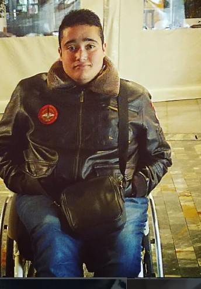

Mi Historia al Límite
Mi camino empezó con un reto desde el minuto cero. Mi nacimiento no fue como el de los demás, y desde ese primer aliento, la vida me puso delante una serie de barreras que, lejos de frenarme, terminaron por definir quién soy hoy. Crecí lidiando con un entorno que no siempre estaba preparado para recibirme, pero esa misma lucha fue la que prendió la mecha de lo que hoy conocéis como Borjaback. Decidí abrir este canal no por ego, sino por una necesidad brutal de visibilizar la discapacidad desde la verdad, sin adornos ni lástima.
El objetivo de este proyecto es ponerle voz a lo que muchos prefieren ignorar: la realidad de la accesibilidad en nuestras calles y en nuestra sociedad. Estamos hartos de ver lugares que se cuelgan la medalla de "accesibles" por poner una rampa impracticable o un baño que no cumple su función. En mis vídeos, muestro lo que es la accesibilidad real frente a la que nos intentan vender. Quiero que el mundo entienda que no pedimos favores, pedimos derechos. Acompáñame en esta misión de derribar muros, denunciar lo injusto y demostrar que siempre se puede vivir al límite.
Nada de esto sería posible sin los pilares que me sostienen. Vengo de una familia luchadora que sabe lo que es pelear contra corriente; crecer junto a mi hermano, con su discapacidad intelectual grave y sus valientes batallas de corazón, me enseñó el verdadero significado de la palabra resistencia. Y en este viaje, no estoy solo. Marta fue esa chispa que terminó de darme el impulso necesario para lanzarme a YouTube cuando solo era una idea en mi cabeza. Junto a ella, Dani, Jose y Pablo han sido los amigos más fieles y sinceros que la vida me ha podido dar. Ellos son el motor que me recuerda por qué empecé y por quién sigo dando guerra.